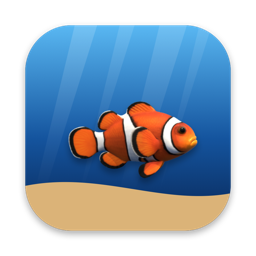
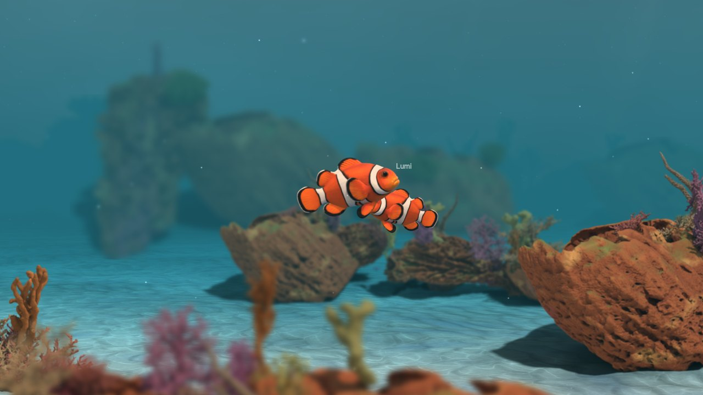
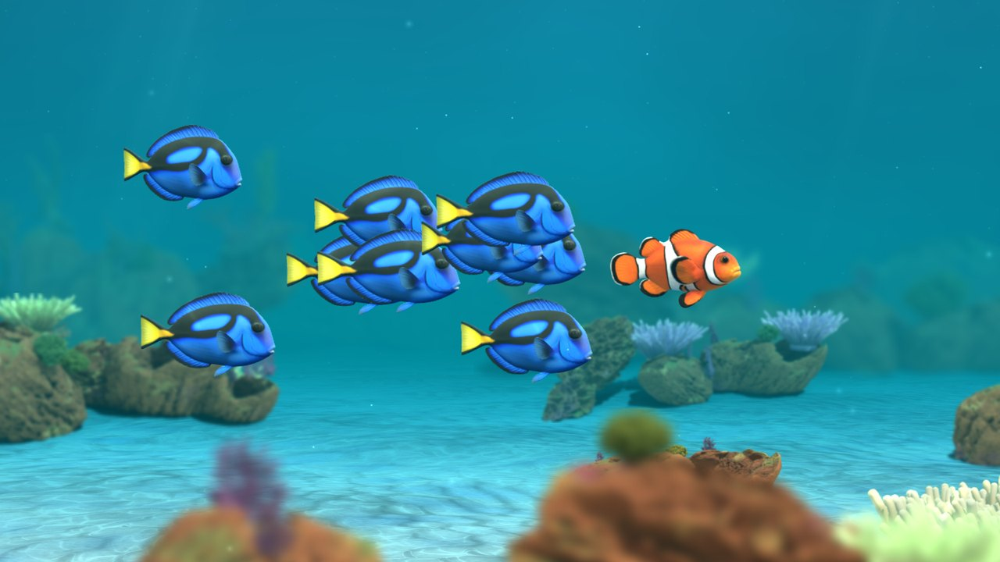

Aquarium wallpaper for Windows
A pet clownfish that lives behind your desktop icons
Fish Ocean turns your Windows desktop into a calm, living coral reef. Your clownfish swims behind your icons and windows all day while you work, so it never covers what you're doing. Glance down between tasks and it's there: nosing around the corals, drifting in the evening light.


A desktop pet, not a looped video
Give your fish a name and feed it a pinch of flakes from its menu; it swims up to eat. The fish decides where to swim, turns, drifts and explores, so it isn't a looped video. Every new fish is one of seven kinds of clownfish: orange, black, snowflake, panda, pearl, Picasso or longfin.
Its day follows yours
The light follows the real sunrise and sunset for your time zone: rosy dawns, bright turquoise days, orange sunsets and blue nights where the water glows. The corals are based on Smithsonian Open Access 3D scans.
Friends' fish visit
Add a friend with your fish's code, from Windows or Mac. A friend with Full Ocean can bring their fish to swim in your ocean. With the optional Open Ocean, fish from around the world pass by to say hello; only fish names are shown, and you can report or block any fish.

Free to try
The free version is your fish's home reef, across all your monitors. With Full Ocean, a one-time purchase ($2.99 in the US; no subscription), your fish travels through nine habitats (coral gardens, kelp forests, seagrass, a shipwreck, sea caves and more), eats plankton, grows over about six months and meets schools of blue tangs.

Light on your PC
It lowers its frame rate on battery and pauses when windows cover the desktop, when a program runs full screen, and in battery saver. No ads, no subscription. Fish Ocean's menu is the fish icon near the clock on the taskbar. For Windows 10 (version 2004 or later) and Windows 11.